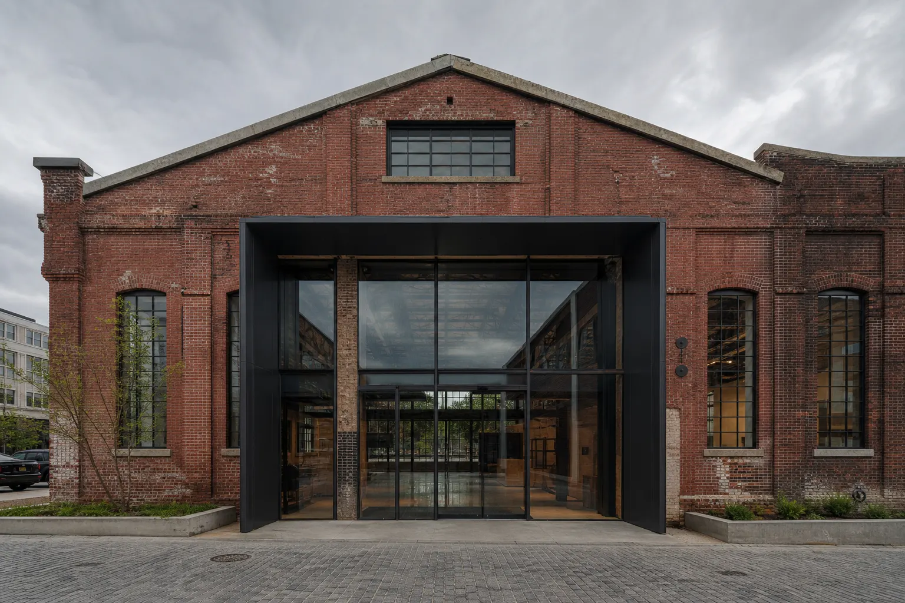
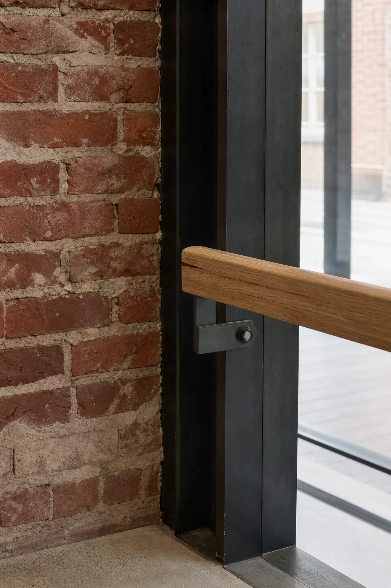

Adaptive reuse
Retain what gives a place its memory.
Project index
Transformation is the common thread, not a visual filter.

Method
We begin by documenting what can be kept, then make new structure legible rather than pretending it was always there. The details explain the practice as clearly as a large image.
Start a project